STEERIFY · A MAC APP FOR CLAUDE CODE
You decide.
Claude builds. Steerify, a Mac app for steering Claude Code.
Ship more. Read less. Steerify puts your roadmap next to the Claude Code sessions doing the work. Claude asks with pictures. You pick, look, and say ship.
Someone has to hold the wheel. Congratulations, it's you.
UP NEXT
9 19 99 SESSIONS OPEN.
3 ARE WAITING ON YOU.
GUESS WHICH.
Steerify knows. They're the amber ones.
Deciding is the whole job.
Claude never builds on a guess. It asks on the board first, one picture per option. You answer in seconds.
- Pick one. One click on the option you meant. Claude marks the one it would suggest.
- Blend two. "B, with the colours of A." Take something from another option and say what in a note.
- Write your own. None of them fit? Answer in your own words.
- Park it. Not now. It waits, and nothing gets built on it.
Then your answers start the build: several answers, one briefed session.
Opinions are cheaper than rewrites.
From one sentence to shipped.
Thirteen ideas, no manual. Scroll, watch, done.
Say what you want.
Write it in plain words. Steerify turns it into requirements, docs and a roadmap.
No template to fill in.
Confirm it with pictures.
Before anything is built, Claude shows the options as mockups. You pick the one you meant.
Look first. Build second.
Build the right thing.
Each answer starts a Claude session, already briefed, in the right repo.
Every terminal has a reason to exist.
Always in sync.
Every session sits on its roadmap item. The status moves on its own.
A status meeting, minus the meeting.
Only what needs you.
Nine sessions running, three waiting on you. You see those three: rowing is blue, your turn is violet with a Test or Answer button, done is grey with a tick. On top of the board, at most two next steps.
The other six don't need a babysitter.
One standard.
Every delivery is checked against the same design and the same tests. Pin a note where it's wrong; it goes back to the session that built it.
Your eyes are faster than your scroll wheel.
Tests that open in the right place.
Claude tests its own work first. Then each test you get is one picture of the exact thing to check, one line of what you should see, and a link that opens on that screen, with sample data already there.
No setup. No hunting for the page.
Skills, not repeats.
What works becomes a skill. Every session reuses it, so everything stays aligned.
Solve it once. Stop explaining it.
Never lost.
Close the laptop and come back: Steerify remembers the chapter you were on, what happened last and what comes next. The menu bar tells you whose turn it is.
Close the laptop. Nothing forgets.
The small jobs stay on your Mac.
Session summaries, sorting a new request, roadmap ideas from your commits, a first check of each screenshot: Apple Intelligence does them on your Mac's own chip. Free, private, and optional. Claude still does the building.
Not everything needs the cloud.
Not only code: Tasks.
A tutorial from your SOP, the Monday data collection, a report. Claude does it with your tools and your standards, once or on a schedule. A run only ends with a result: what it made, the numbers, a tick or a cross on every check. You say OK or Redo.
Plan it once. Check the result, not the session.

Ship by product.
One card for each thing you ship: the Mac app, the website, the iPhone app. Each one shows its live version and the approved work waiting for it. Press Ship and the session that built it commits, pushes and deploys. A stopped release stays calm: the old version is still live, and Fix it with Claude gets the log.
Approve it. Ship it. Go to bed.
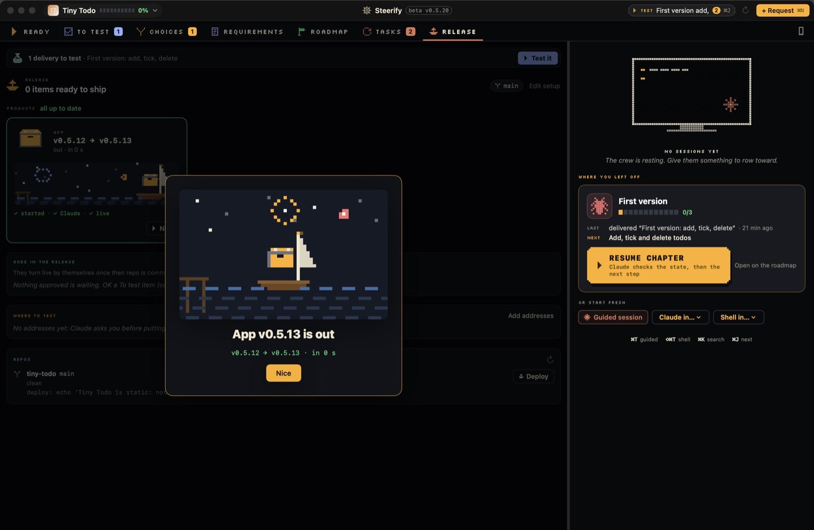
Tell us, watch it land.
Report a bug or ask for a feature from inside Steerify. You don't need a GitHub account, and the sheet shows exactly what will be sent before it goes. It lands on our board as a request, and you follow it on the public roadmap from Next to Live. Your own project gets the same: a feedback form and a roadmap page in your brand.
Feedback that doesn't vanish into a form.
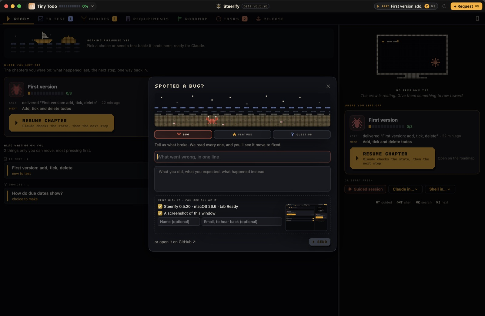
And this is what it looks like.
Two demo projects, Tiny Todo and Nonna Says. Tiny Todo comes with the app, so you can click through all of this before touching your own code.

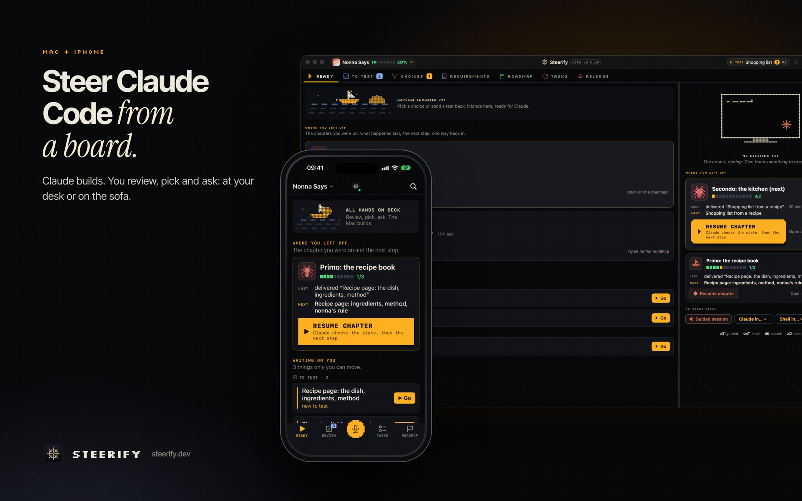

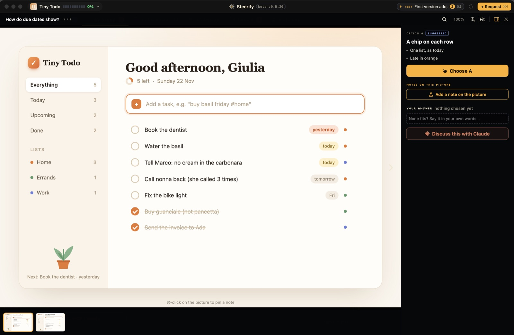

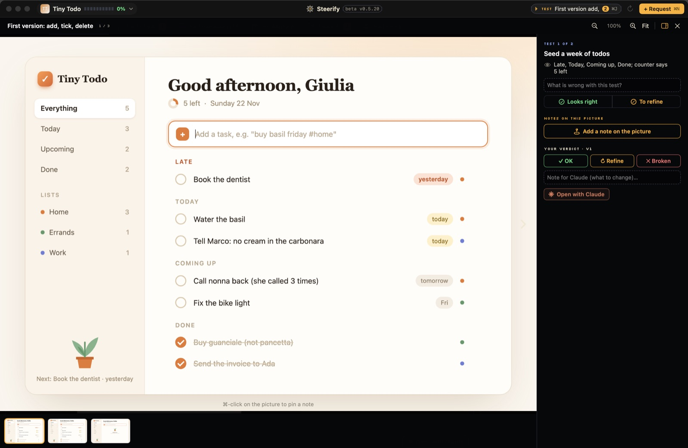

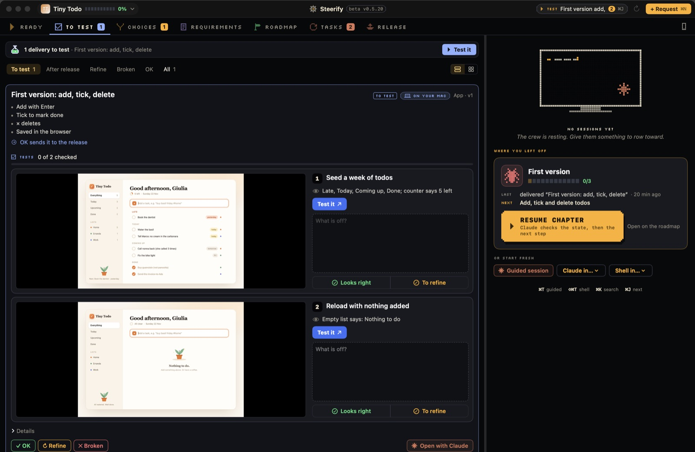

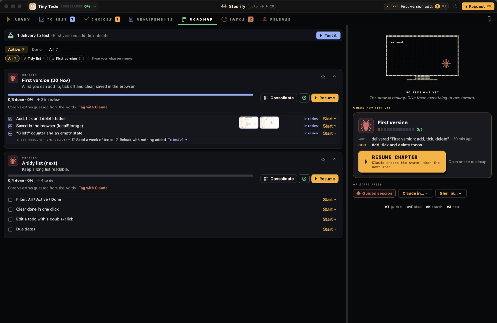


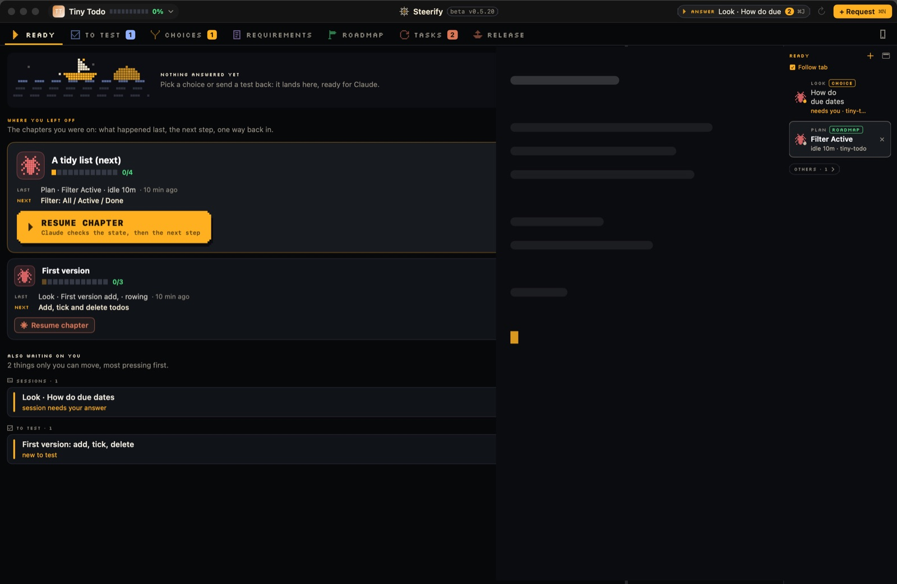

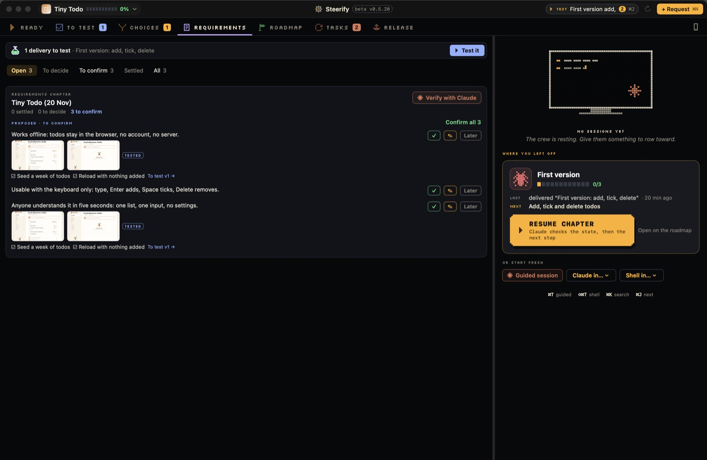


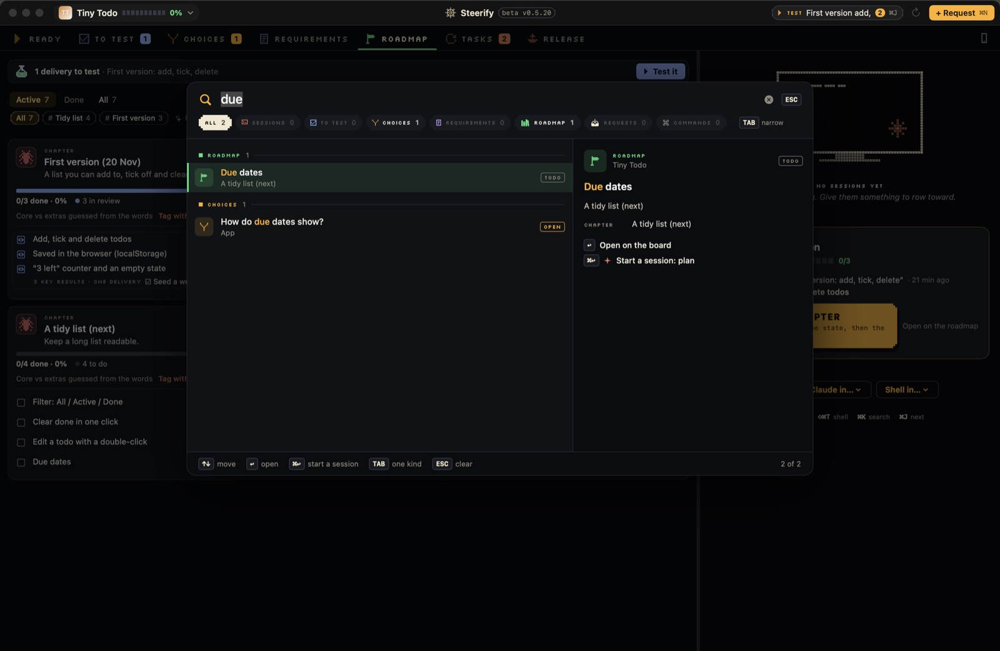


Five short films. Twenty seconds each, give or take.
Longer, with Frenk talking: getting started from zero, Steerify if you don't code, Steerify if you have 99 terminals.
Take the wheel.
Free and open source. Download it, add a folder, start steering.
▶ DOWNLOAD FOR MACfree and open source
Early build, not notarized by Apple yet. The first time, open it from System Settings → Privacy & Security → Open Anyway.
$ brew tap thisfiore/steerify https://github.com/thisfiore/steerify-release
$ brew trust thisfiore/steerify
$ brew install --cask steerifyMac only · macOS 15+ · updates itself · MIT license · your own Claude Code login
Built by this guy, for his own 99 sessions. If it breaks, tell him.
- ★ Star it on GitHubIt's how other builders find it.
- Report a bugA short form. Screenshots welcome.
- Suggest a featureSay what you were trying to do.
- Every release, with notesAnd the code, if you like reading.
No GitHub? Leave an email and we'll write when a new version is out. Nothing else.
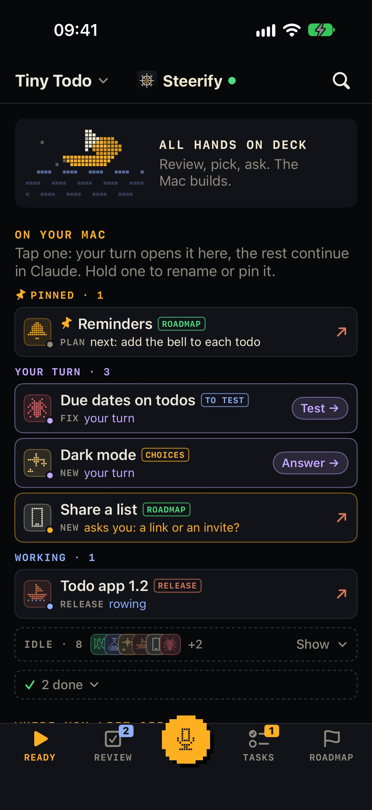
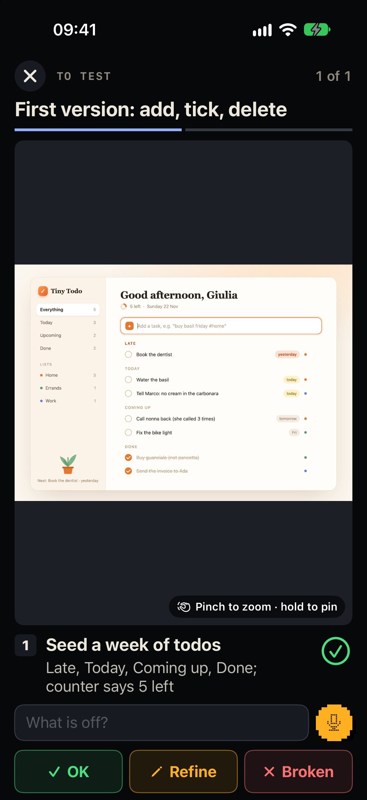
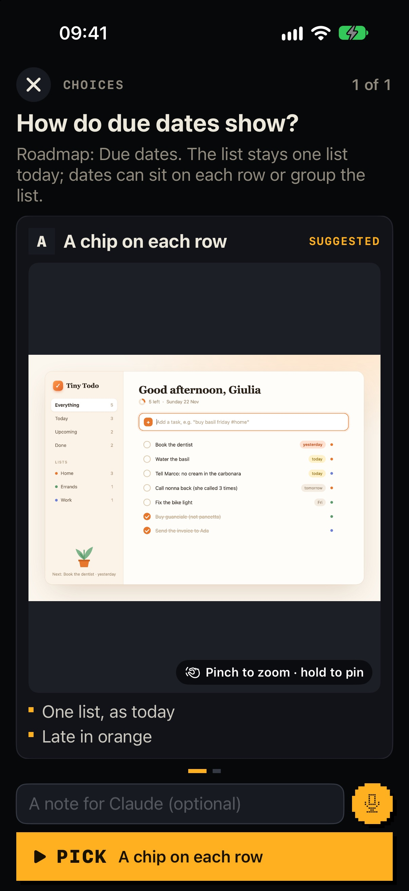
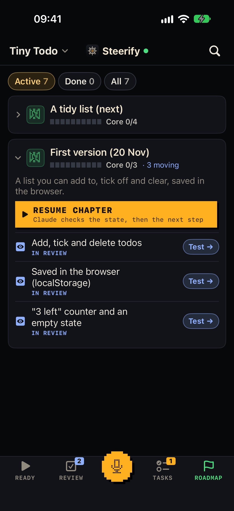
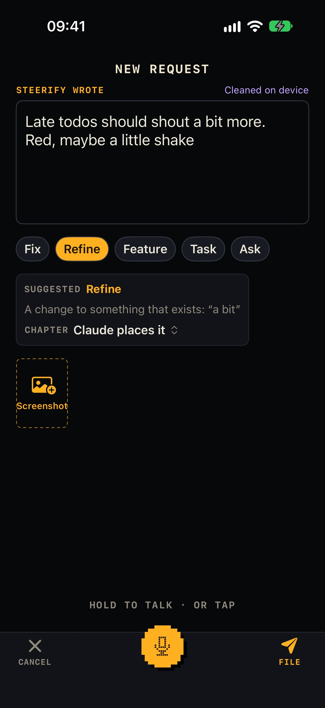
Steer from the sofa.
The board in your pocket. Look at what's to test, answer a choice, resume a chapter. Your Mac does the building.
- Test, pick, ask: one tap each
- Works offline, syncs with your Mac
- Say a request out loud
Invite only, a few people at a time. You get an email from TestFlight. Needs the Mac app.
Steerify was steered in Steerify.
Every feature on this page was a choice, a build and a look on its own board. Numbers from that board:
For the people who ask how.
How you start
- Add a project. Drop a folder on Steerify, or pick one. Steerify creates a
.steerify/board inside it: plain JSON files that travel with your repo. Set up with Claude reads the project and fills the board in while you watch. - Say how technical you are. Explorer, Tinkerer or Builder, asked once. It sets what you see (terminal, git, release buttons) and how Claude talks to you. Change it in Settings.
- The skill installs itself.
~/.claude/skills/steerifyteaches every Claude Code session the same loop. - Start an item. It opens
claude '/steerify build <item>'in the right repo, in a real terminal.
Three steps. One of them is clicking a folder.
How it releases
Set up once per project and saved in steerify.json. You choose how sessions use git:
- On main. Every session in the repo's own folder. For simple projects.
- Worktree per feature. Each feature gets its own folder and
steer/<feature>branch, merged after your OK. - Branch + pull request. Each feature is pushed and opened as a pull request. Your OK merges it.
The Release tab has one card per product (the Mac app, a website, an iPhone app), each with its live version and what goes in the next release. Ship one and it shows shipping, then live. Per repo you set the release branch, a deploy command (run in a visible terminal tab, with your own keys) and an optional live-check URL, so approved items mark themselves live.
Is Steerify an AI?
No. Claude Code does the building, with your own login. Steerify is where you steer it. For small jobs like session summaries and sorting requests, it also uses Apple Intelligence on your Mac, when that is turned on.
Do I need Claude Code?
Yes. Sessions run in a real terminal on your Mac. Steerify never sees your keys.
Where does my board live?
In a folder of plain files in your own repo. Delete Steerify and it's all still yours.
How does Steerify know what a Claude Code session is doing?
Through Claude Code hooks, never by reading the terminal output. Every session Steerify starts carries a few hooks (prompt, tool use, Stop, Notification, PermissionRequest), so it flips to working, idle or needs you the moment something happens. To tell finished from asked you something, it reads Claude's last reply in the session transcript. No polling, no tokens spent. How it works, step by step.
How is Steerify different from T3 Code?
T3 Code manages agents: threads, branches and pull requests across Claude Code, Codex, Cursor and more, on every platform. Steerify manages decisions: choices with mockups, visual review and a roadmap, native on Mac, for Claude Code only. Running many agents? T3 Code. Tired of reading scrollback to decide? Steerify. Full comparison.
Can Claude do work that isn't code?
Yes: that's the Tasks tab. A tutorial from your SOP, a weekly report, a data collection with your own tools. Give it an outcome and a few checks, run it once or on a schedule (every Monday at 8). Each run ends with a result you OK or send back; a run that never reports shows up as No result.
Found a bug? Want a feature?
Press the Beta pill or the Help menu: Report a bug, Ask for a feature, or a question. It shows exactly what gets sent (version, a screenshot if you want), and you see it move to fixed. GitHub issues work too.
Is there a Windows version?
Not yet. Steerify is a native Mac app, and a Windows version means writing the whole app again. Join the Windows waitlist: if enough people ask, it gets built, and you hear first.
What does it cost?
Nothing. Steerify is free and open source (MIT). You bring your own Claude Code login. Not made by Anthropic; Claude is their trademark.